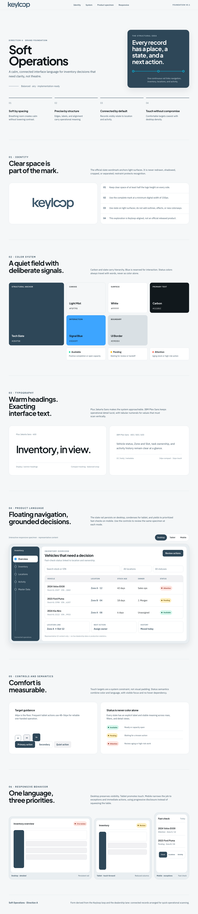
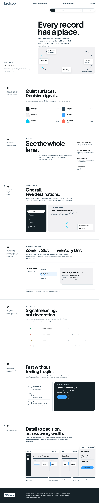
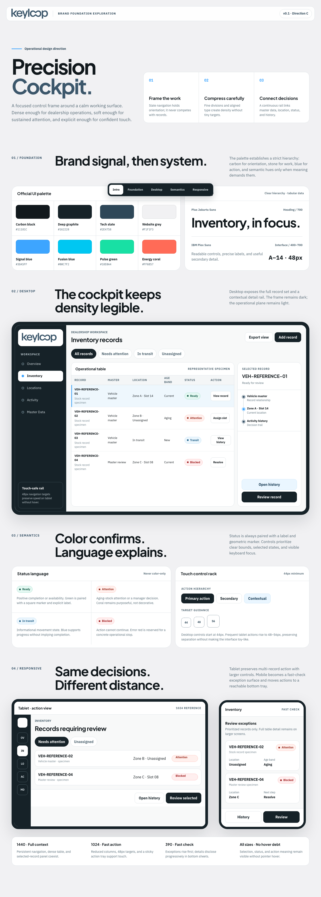

Direction A · Balanced
Soft Operations
Calm surfaces and a floating slate navigation create the most implementation-ready foundation for everyday dealership management.
SoftClearAdaptable
One Keyloop-aligned foundation, explored through three responsive product personalities. Review the full HTML artifacts at desktop, tablet, and mobile widths.

Calm surfaces and a floating slate navigation create the most implementation-ready foundation for everyday dealership management.

A continuous information lane makes the Zone, Slot, Inventory Unit, and Vehicle Master relationships visible and navigable.

A framed operational workspace exposes maximum desktop context, then compresses carefully into touch-first tablet and fast-check mobile views.